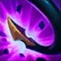

Q
VOID SURGE
Bel'Veth přeběhne zvoleným směrem a způsobí poškození všem nepřátelům, kterými projde.

W
ABOVE AND BELOW
Bel'Veth udeří ocasem do země, zasaženým nepřátelům tak způsobí poškození, vyhodí je do vzduchu a zpomalí je.

E
ROYAL MAELSTROM
Bel'Veth se znehybní, během soustředění kolem sebe vyvolá bouři sečných útoků, které se zaměřují na nepřítele s nejnižší hodnotou zdraví, a získá bonus k léčení útoky a snížení poškození.
R
ENDLESS BANQUET
Bel'Veth pohltí korálové ostatky z Prázdnoty, přemění se do své pravé podoby a zvýší si maximální zdraví, dosah útoků, rychlost útoků a rychlost pohybu mimo boj. Pohlcením korálových ostatků z Prázdnoty po epické příšeře z Prázdnoty získá delší trvání ultimátky a možnost vyvolat rybovité tvory z Prázdnoty.